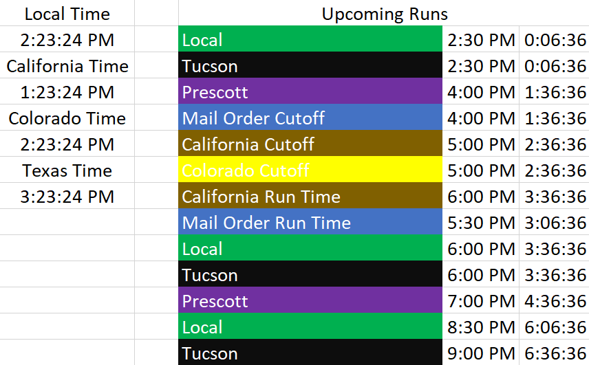

Rolling Run Times Clock
This clock organizes and displays the various run times served by a multi-state operation. The rolling clock displays a countdown to each run time and also considers daylight savings time shifts.
Skills Used
- Excel Spreadsheets
- VB Scripting